TaiyaOK! Brand guideline and logo
Creation of the brand TaiyaOK including wordmark and brand guideline TaiyaOK is a restaurant that prides itself on their freshly made Taiyaki.
Enjoy a fresh Taiyaki and coffee at TaiyaOK!
Personal Branding
A personal branding project fusing graphic design and 3D artistry to craft a unique, dynamic identity.
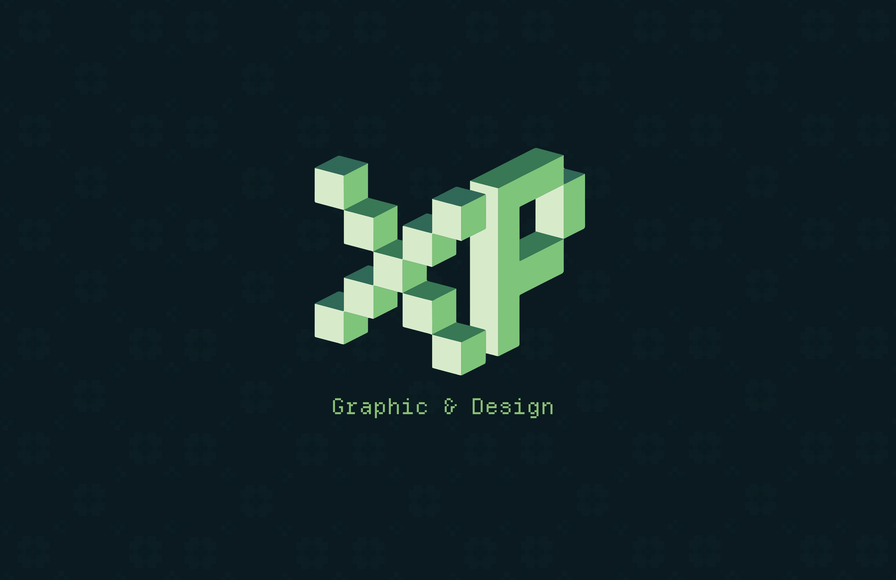
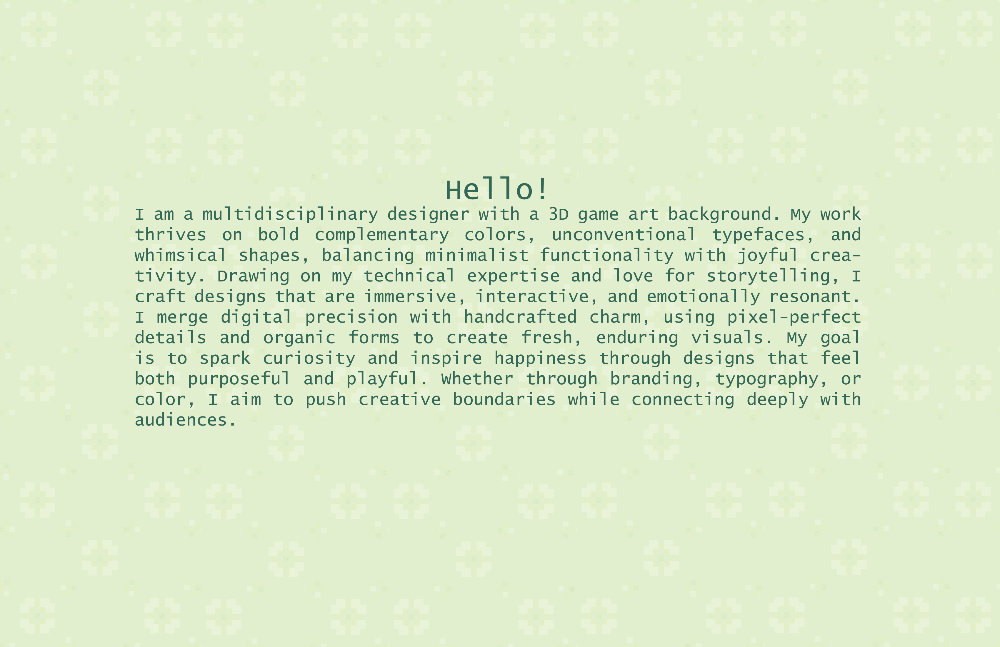
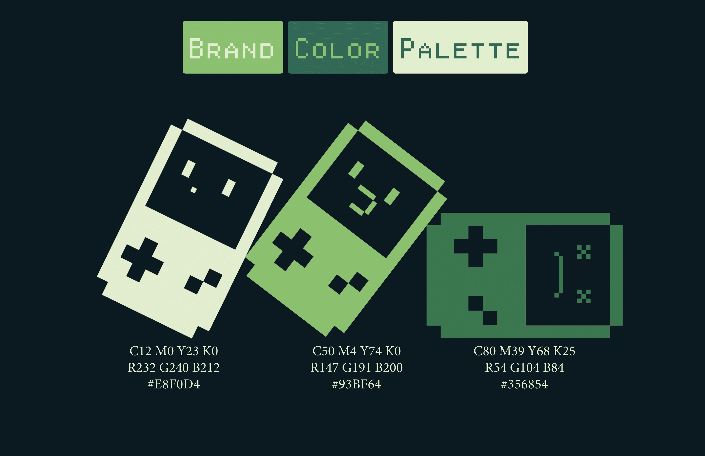
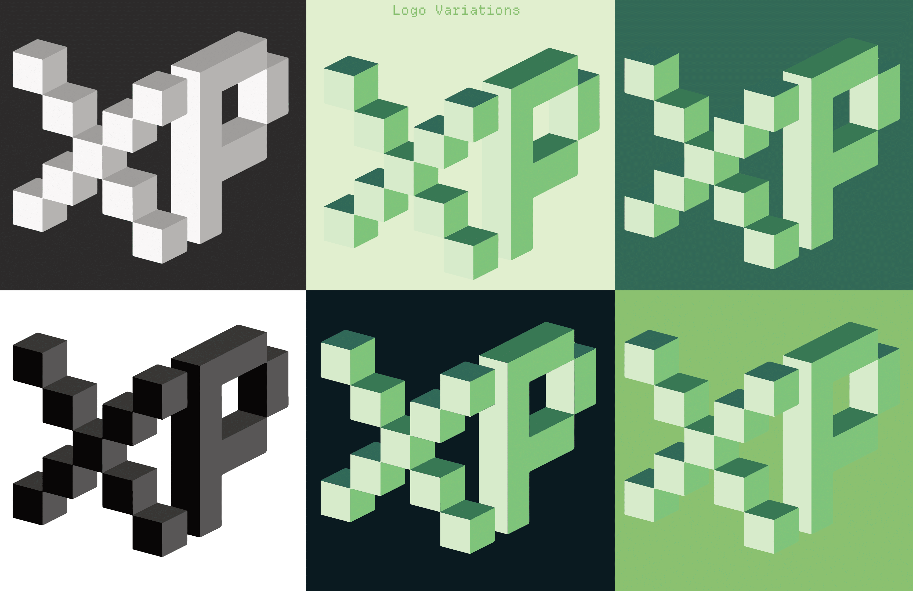
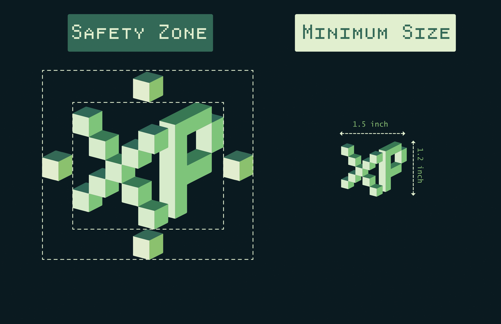
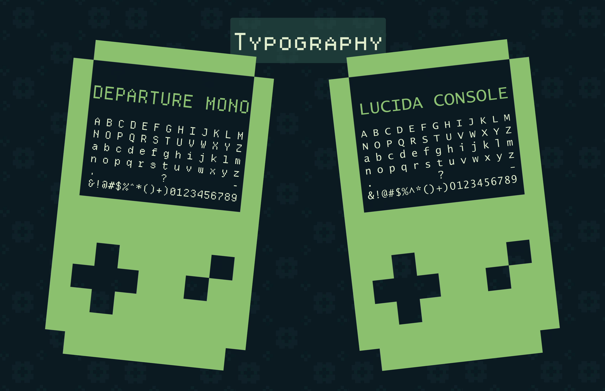
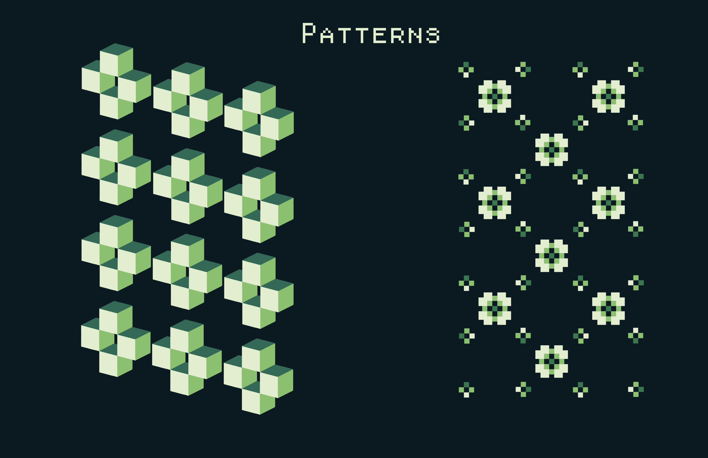

Magazine Article
Editorial design inspired by Type One Magazine’s distinctive style, reinterpreting its bold typography and layout principles for a feature on sleep science.

 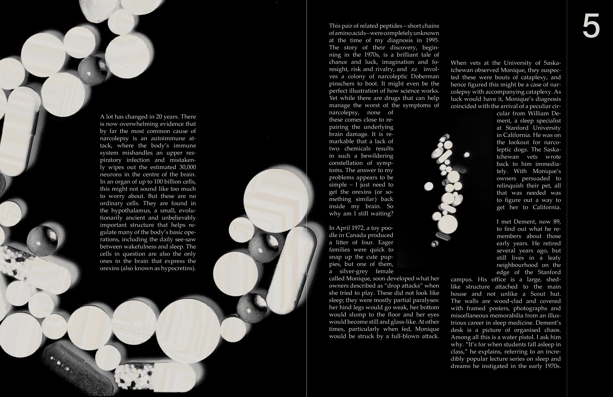
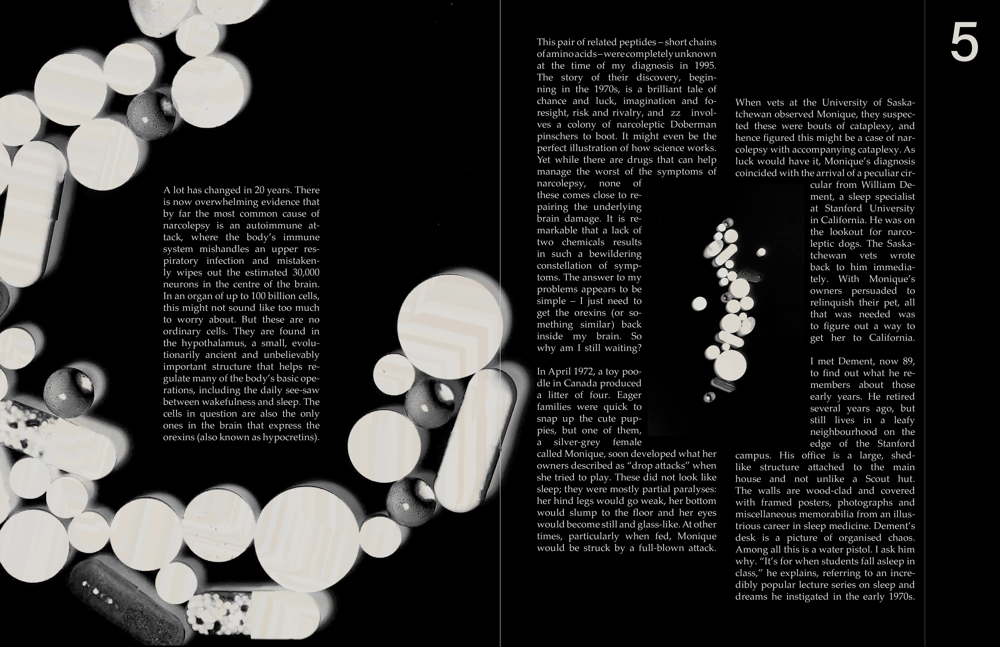
 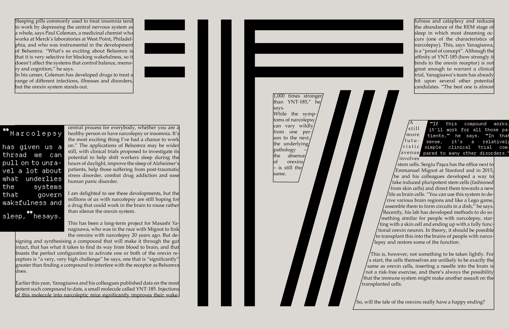
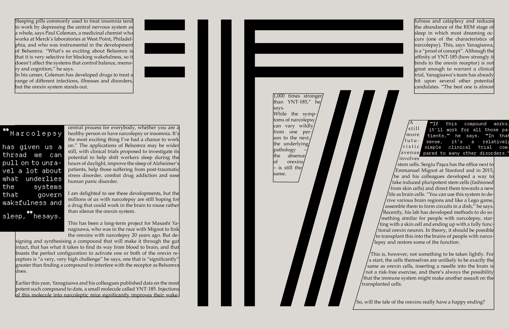
Restaurant Menu
Modern redesign of Falafel World's menu and logo, combining clean aesthetics with Middle Eastern charm.


 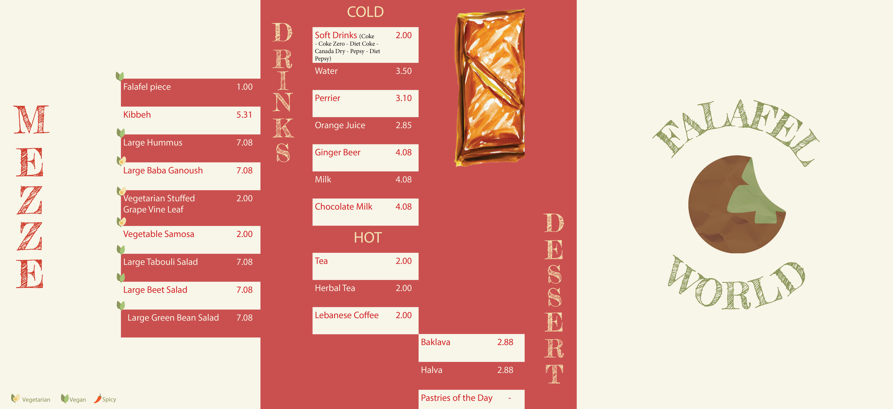
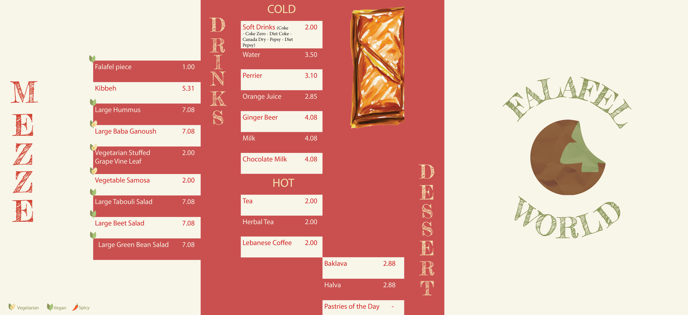